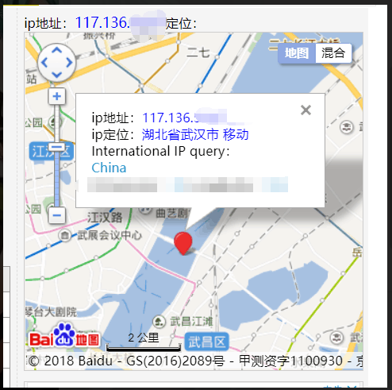

通过邮箱偷IP定位的正确姿势
本文针对用户群体为不使用代理查看邮件的用户
还记得那些年，邮箱钓鱼盛行，各种广告邮件钓鱼邮件层出不穷（现在还有某阿X的开发票推送），经过邮箱防水墙能拦截一部分以外，你是否注意到了正常邮箱可能被有心人利用的姿势？
真·检测邮箱是否已读
某天，工作的时候发送了一封邮件给一个比较重要的人，左等右等，心里在想，TA看了我的邮箱没有？现在通过一个姿势来获取一下自己邮箱的已读状态吧？
原理 邮件被打开后很大几率会直接加载邮件中的图片
首先，准备一台服务器，服务器的权限最好是自己有，使用一下代码：
1 | header('Content-Type:image/png'); |
以上代码创建了一个1x1大小的全透明的图片（谁都看不到哦），我们把这个图片放到我们自己的服务器上，访问可以看到一张啥都没有的图片：

光是生成图片还不够，我们记录一下 $_SERVER['HTTP_REFERER'] 和 $_SERVER['HTTP_USER_AGENT'] 这俩个存储了用户从哪里来，使用了什么用户代理（浏览器设备）过来的，最后还有 ip，我们通过如下代码获取：
参考：https://github.com/DXkite/suda/blob/master/system/src/suda/core/Request.php#L211
1 | function get_ip() |
获取完以上数据后，写入到数据库中：
1 | $ip = get_ip(); |
写完以后，我们在邮件中插入我们的图片（使用URL插入），对方收到后可能是这样的：
对方打开后，那么数据库中：

可以看到对方的信息：
| 字段 | 信息内容 | 解释 |
|---|---|---|
| HTTP_USER_AGENT | Mozilla/5.0 (Linux; Android 8.0.0; MIX 2S Build/OPR1.170623.032; wv) AppleWebKit/537.36 (KHTML, like Gecko) Version/4.0 Chrome/62.0.3202.84 Mobile Safari/537.36 | 从头部分析，可以看到用户通过小米Mix 2S打开的邮件 |
| HTTP_REFERER | http://netease-default-url-start/ | 从来源可以看出，用户通过网易客户端打开邮件 |
| IP | 117.136.*.* | 打开时，用户使用的出网IP |
通过IP定位
这个自己找IP定位设备的网站吧

防范
不是每个人上网都带跳板的，所以很容易定位到对应的地址，手机还好，如果是通过电信啥的上网，地理位置很容易就定位了。